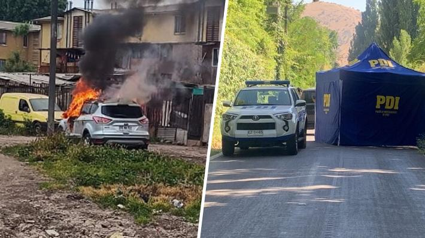

Comunas periféricas en alerta: Las miradas y factores que explicarían el fenómeno del aumento de la violencia
Autor: Daniela Toro
Fecha y Ubicación: 14 de Enero de 2024 , Chile
Categoría: Ultimo minuto
El avance del crimen organizado, facilitado por la "ausencia del Estado", han transformado la "normalidad" de algunas zonas, que hoy son escenario de enfrentamiento de bandas rivales.
El hallazgo de cuerpos en zonas rurales o periféricas de la Región Metropolitana se ha convertido en una tendencia que no sólo los alcaldes de las zonas afectadas reconocen como un fenómeno que altera la calma en villas y poblaciones, sino que también en la Fiscalía reconocen que existe una tendencia al alza en estos hechos.
Así lo señaló a Emol la subdirectora de Crimen Organizado de la Fiscalía Nacional, Tania Gajardo, quien precisó que "la tendencia que tenemos un aumento de homicidios en contexto de crimen organizado, con uso de armas de fuego, desde vehículos en movimiento, con cadáveres con distintas señales de violencia abandonados en distintos lugares como sitios eriazos, y también el aumento de víctimas extranjeras". De hecho, en la cuenta pública de las cuatro fiscalías regionales -Sur, Oriente, Occidente y Centro Norte-, se constató un aumento del 12% de homicidios para el periodo entre el 16 de noviembre de 2022 y el 15 de noviembre de 2023. "El crimen organizado explica gran parte del aumento de la violencia y de los delitos, dado que se genera en un contexto de crecientes disputas por apropiarse de las riquezas que generan lucrativos mercados ilegales como el de las drogas, las armas y de personas, así como también de las cuantiosas ganancias que generan otros lucrativos mercados ilegales como el de vehículos y celulares robados", expuso en la instancia el fiscal regional de la Fiscalía Regional Metropolitana Sur, Héctor Barros.
Violencia en zonas periféricas La subdirectora Gajardo comenta además que hoy es posible hallar zonas de la Región Metropolitana que han sufrido una importante alza en la violencia, como El Monte o Melipilla, "donde hay lugares igual de peligrosos que en la zona sur de Santiago, que era algo que en esta zona antes no se veía". "Esto tiene que ver con que cuando se derribaron departamentos en Bajos de Mena, en Puente Alto, se redistribuyó a la población hacia esos sectores. Y yo diría que el remedio fue peor que la enfermedad. Hay bandas locales que operan y zonas que son peligrosas, y con alta criminalidad, así como la hay en la zona sur de Santiago", precisó.
Según comenta Gajardo, si bien habían personas que estaban ubicaas "muy lejos en Bajos de Mena, por lo menos tenían acceso al Metro, en Plaza de Puente Alto, pero al cambiarse hacia esas zonas, donde no hay acceso a nada, quedan más desconectados que antes". Otras comuna que menciona la subdirectora con aumento de violencia es Peñaflor, donde hoy se evidencia una "rivalidad entre bandas, y eso no ocurría". Uno de los casos más recientes que dan cuenta del fenómeno ocurrió en octubre, luego que una reconocida narcotraficante de Peñaflor, apodada "La Ina", fuera asesinada de ocho disparos en la comuna de Padre Hurtado; en tanto, su auto fue hallado incendiándose en Quilicura. "Cuando no hay opciones de llegar a los lugares donde puedes trabajar, estudiar, donde no hay Estado, pasa esto", indicó Guajardo. "La criminalidad no nace sola, tiene un contexto. Entonces, si tienes personas que viven de tráfico de drogas, que ganan dinero y muestran sus lujos, y eso es lo único que ven los jóvenes de un sector, no vas a tener otro producto ahí", cerró.
Quien también aborda el problema en estas zonas es la investigadora de AthenaLab, Pilar Lizana. Según comenta, en estos lugares se pueden hallar laboratorios de drogas y lugares que se han transformado en centro de modificación de armas, y para que este tipo de situaciones germine con fuerza "necesitamos de la ausencia del Estado". En un lugar donde el Estado está presente, dice Lizana, "con un buen lugar para que los hijos estudien, barrios limpios, comunicación entre los vecinos, seguridad municipal, redes de desarrollo, va a ser mucho más difícil que este tipo de violencia o situaciones se presenten".
Incidencia de bloques de vivienda social Otra dimensión del problema la abordó Atisba Monitor, desde donde abordaron la relación entre la ocurrencia de homicidios y el tipo de vivienda social que existe en determinadas zonas de barrios "críticos". Para el estudio, analizaron los 47 homicidios ocurridos en los meses entre diciembre de 2023 y el 10 de Enero de 2024.
Según explica Iván Poduje, socio de Atisba, "el objetivo era identificar patrones que explicaran la localización de los delitos, en relación a otros temas analizados en Atisba. Con ello es posible focalizar la acción del Estado para atacar los factores de contexto que explican estos hechos que han conmocionado al país". Una de las conclusiones, apunta a que un 47% de los homicidios ocurrió al interior o en los bordes de los barrios críticos definidos por Atisba a partir de los estudios de Ciper, información de la Fiscalía (observatorio del narcotráfico) mapas del sistema STOP de Carabineros y levantamientos propios. Este hallazgo, comentan, "era esperable, ya que en estos sectores hace tiempo que el Estado no tiene presencia ni control, lo que hace que las disputas sean más violentas e impunes. En este contexto, el Cono Sur de Santiago agrupa 14 homicidios, confirmando que se trata de una de las zonas más violentas de la RM". Otro factor que aparece y que preocupa, es la directa relación entre homicidios y un tipo de vivienda social: el condominio o bloque de 3 y 4 pisos de altura, localizados al interior de estos barrios críticos. Esta tipología del bloque está presente en 12 de los 47 homicidios analizados, es decir un 26%, pero ocurre en zonas sumamente específicas o acotadas delos barrios críticos.